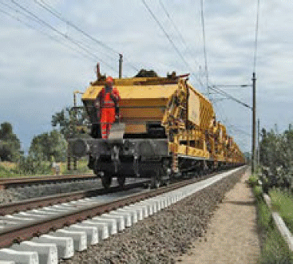

Die Materialversorgung gleisgebundener Baumaschinen im Baugleis erfolgt häufig durch geschobene Rangierfahrten (Abb. 10-1), die im Arbeitsgleis bis an die wartende Baumaschine heranfahren müssen – z. B. Schwellenzüge bei Umbaumaschinen oder Materialförder- und Silowagen (Bunkerschüttgutwagen) mit Neuschotter sowie Planumsmaterial oder Leerwagen für unbrauchbares Oberbaumaterial bei Bettungsreinigungsmaschinen oder Planumsverbesserungsmaschinen. Dabei können die folgenden Situationen entstehen:
Im Regelfall wird bei Baustellen auf zweigleisigen Strecken vor solchen Rangierfahrten im gesperrten Arbeitsgleis nicht gewarnt, da bereits für die Zugfahrten im Nachbargleis Warnsignale gegeben werden (z. B. durch ein automatisches Warnsystem, das das Signal Ro 1 gibt: „Vorsicht! Im Nachbargleis nähern sich Fahrzeuge“). Eine Warnung mit Ro 2 für die Rangierfahrt im Arbeitsgleis (Ro 2: „Arbeitsgleise räumen“) ist dann wegen der Gefahr, dass die Warnsignale verwechselt werden, nicht akzeptabel und wegen der Großmaschinen für das Arbeitsgleis nicht umsetzbar.
Für geschobene Rangierfahrten zur Baustellenversorgung gelten daher besondere Anforderungen, um das Überfahren von Personen und das Auffahren auf Maschinen auszuschließen:
Diese Anforderungen gelten abgesehen von den Punkten, die die Spitzenbesetzung betreffen, auch für gezogene Rangierfahrten. Die Arbeitsstellen im gesperrten Arbeitsgleis müssen nachts gut beleuchtet werden, damit sie von der Spitzenbesetzung erkannt werden können, siehe hierzu auch Modul 132.0118A08 [25].
Gleiches gilt für Sperrfahrten, die im Bereich der DB den Befehl „Fährt mit höchstens 20 km/h und auf Sicht“ erhalten.

| Abb. 10-1: | Eine geschobene Rangierfahrt – hier Materialtransport für eine Planumsverbesserungsmaschine – muss von der Spitzenbesetzung vor Personen im Arbeitsgleis zum Halten gebracht werden können. Der Luftbremskopf ist an die Hauptluftleitung angeschlossen und wird bedienbereit gehalten. |